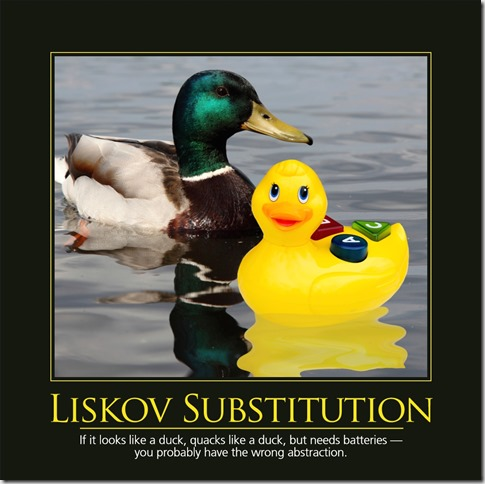
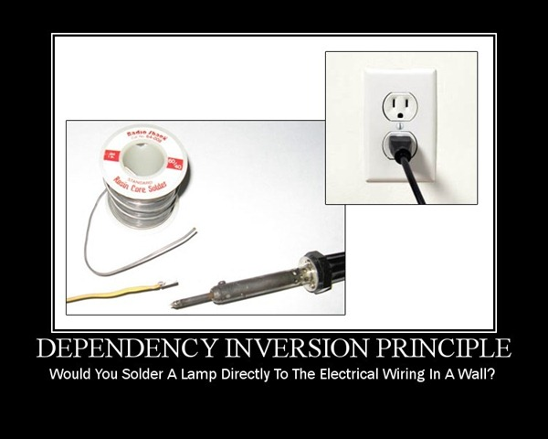

S.O.L.I.D 是面向对象设计（OOD）的头五大基本原则的首字母缩写，由俗称「鲍勃大叔」的 Robert C. Martin 提出。
这些原则的核心思想是使程序更加易于维护、扩展和重构，同时也尽量避免代码异味。这五大原则分别为：
| 缩写 | 全称 | 中文名 |
|---|---|---|
| SRP | The Single Responsibility Principle | 单一责任原则 |
| OCP | The Open Closed Principle | 开放封闭原则 |
| LSP | The Liskov Substitution Principle | 里氏替换原则 |
| ISP | The Interface Segregation Principle | 接口分离原则 |
| DIP | The Dependency Inversion Principle | 依赖倒置原则 |
单一责任原则 (SRP)
A class should have one and only one reason to change. —— 一个类应该有且仅有一个被修改的理由。

就是说一个类应该只负责做好一件事（也就是只有一个被修改的理由）。举一个简单的例子：
# Ruby
class Post < ActiveRecord::Base
def create(user, content)
post = Post.new
post.content = CGI.escapeHTML(user.fullname + ": " + content)
post.save!
end
end在上面的create方法一共有四个被修改的理由：
post.content它默认了post这个对象有一个attribute叫content，那么以后如果post数据结构有变，比如我想改名content为text，我必须记得要同时更新这一地方。CGI.escapeHTML如果以后我想换成另一个库抑或不再需要escape用户输入，我都需要更改这行代码。user.fullname + ...这个属于数据样式定义，以后任何时候我需要更改存储数据的样式，我都需要碰触这行代码。post.save!严格意义上讲，实际将数据存进数据库的这一行为应该算作另一个责任。此话怎讲？因为数据的存储可以涉及到很多负责的情况：存储可以出错——比如数据不有效或者数据库超）；数据可以需要预处理——比如在存入数据库之前我们需要进行复杂的运算；又或者数据并不需要存入数据库——而只是需要把数据模型化然后传到其他服务器。当涉及到以上情况时，数据存储可以轻松升级成为一个复杂的问题，因此在设计初期将它视为另一责任是有实际意义的。
由上可以看出，这段代码异味较高，多个被修改理由意味着潜在的代码维护风险。最简单的修改方法就是将每个责任移出作为单独的逻辑：
class Post < ActiveRecord::Base
def create_post(user, content)
post = Post.build_post(user, content)
post.save!
end
def build_post(user, content)
post = Post.new
post.content = process_content(user, content)
post
end
def process_content(user, content)
CGI.escapeHTML(format_content(user, content))
end
def format_content(user, content)
user.fullname + ": " + content
end
endP.S. 在实际应用中，MVC(Model/View/Controller) 模式就是遵循了单一责任原则。它将网站的责任分为了三大类：Model只关心网站存储的数据模型——这个数据长什么样，装什么内容，或者怎么跟数据库沟通；View只关心怎么展示数据——哪些数据需要展示，需要怎样展示等等；Controller则只关心如何根据用户指令存取数据——如何处理读取、检索、更改、添加、删除等指令。如此一来各个部分各司其职，即保证了方法里的高聚合度也保证了方法间的低耦合度。
开放封闭原则 (OCP)
Objects or entities should be open for extension, but closed for modification. —— 对象应该是可扩展，而不可修改的。即对扩展是开放的，而对修改是封闭的。

换句话说，也就是一个类/对象应该被设计成不可修改但可以被扩展。如此一来如果你想添加一个新的功能，你只需对已有的对象进行扩展而非修改。举一个例子：
# Ruby
class PaymentHandler
def charge(payment)
if(payment.get_type == CREDIT)
# charge by credit card
elsif(payment.get_type == DEBIT)
# charge debit card
else
# throw exception
end
end
end在上面的支付例子中，我们的系统对用户提供支付方式进行检测从而确定用不同方式进行转账。但是如果以后我们想要支持新的支付方式，例如支付宝或者微信支付，那我们就不得不再“打开”这段代码并添加相应的if..else语句，如此代码会很容易长到几百甚至几千行，代码维护起来的开销也会越来越大。
比较好的做法是将不同的支付方式抽象为一个统一支付对象的子类，然后对每个子类的逻辑分别进行扩展：
# Ruby
class PaymentHandler
def charge(payment_type)
payment = get_payment(payment_type)
payment.charge
end
end
class Payment
def charge
# Throw not-implemented exception
end
end
class Credit < Payment
def charge
# charge by credit card
end
end
class Debit < Payment
def charge
# charge by debit card
end
end这样，新增支付方式只需要添加新的类，再通过使用工厂模式来根据不同的支付类型返回相应的支付类，从而最小化对现有对象的改动。
里氏替换原则 (LSP)
Objects in a program should be replaceable with instances of their subtypes without altering the correctness of that program. —— 在程序中的任何基类应该可以被其子类或派生类替换，并且不会导致程序的错误。

上图描述的就是一个经典的违法里氏替换例子：
当一个鸭子看起来像只鸭子，叫起来像只鸭子，但是需要装电池，那么这样的建模就很可能不合理的。为什么不合理呢？因为如果这样设计的话，在你的代码中就极有可能出现需要检查鸭子类型的情况——因为我们有一种“特殊”的鸭子跟其他鸭子都不同，需要单独的逻辑来处理装电池的情况。这就导致了代码的异味。（P.S. 是不是觉得这种在代码中检查对象类型的情况似曾相识？是的，违反里氏替换原则也会常常连带违反开放封闭原则。所以当你发现上述症状的时候，也可以找找问题的根源是否是出在了建模上。）
接口分离原则 (ISP)
Clients should not be forced to depend on methods that they do not use. —— 客户端不应该被迫依赖它们不使用的方法。
即如果一个类的接口中包含了客户端不需要的方法，那么就违反了依赖倒置原则。因为客户端为了使用这一接口而有不得不实现它不需要的方法部分，例如下面的例子：
// Java
interface DuckBehavior (
void quack();
void changeBattery();
)
class Duck implements DuckBehavior {
public void quack(); { ... }
public void changeBattery(); { // do nothing! }
}
class EletricDuck implements DuckBehavior {
public void quack(); { ... }
public void changeBattery(); { ... }
}正常的鸭子根本没有换电池的功能，但是由于实现了DuckBehavior，又不得不将changeBattery()实现成了空方法，虽然这个方法什么事也没有做。可想而知，当有很多鸭子都需要使用这个接口的时候，必然会造成大量的无用代码。改进的方法也同样简单，将接口拆分成更小和更具体的接口，这样每个客户端可以根据自己的情况来使用相对应的接口。
依赖倒置原则 (DIP)
Entities must depend on abstractions not on concretions. —— 实体必须依靠抽象而不是具体实现。

它表示高层次的模块不应该依赖于低层次的模块，它们都应该依赖于抽象。这个原则实际上就是开闭原则的实现策略。咱们再回头来看这个例子：
# Ruby
class PaymentHandler
def charge(payment)
if(payment.get_type == CREDIT)
CreditProcessor.new(payment).charge
elsif(payment.get_type == DEBIT)
DebitProcessor.new(payment).charge
else
# throw exception
end
end
end
class CreditProcessor
...
end
class DebitProcessor
...
end这样设计导致的结果就是PaymentHandler这一高层次模块依赖于两个低层次的Processor实现，因此违反了依赖导致原则。以后需要修改CreditProcessor或者DebitProcessor的时候，我们都需要打开PaymentHandler进行修改，因此也违反了开闭原则。改进的方法与开闭原则的方式相同，即定义一个抽象的类让子类继承，然后让高层模块仅依赖于这个抽象的类，从而实现去耦。
结语
网上讨论S.O.L.I.D的文章有很多，但很多描述得不够详细和具体，希望这篇总结能够有所帮助。老实说，这些原则初看起来可能比较难以理解，但只要你能够开始使用并尝试并遵守其指导方针，它就会慢慢让你的代码变得更容易修改、扩展和重构，而不出任何问题。